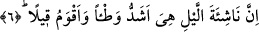

ağır bir söz vahyedeceğiz” ifâdesi vahyin geride kalan süresine işâret etmektedir.
Çünkü bu âyetin harfleri -idğam yapılan nun ile tenvin nunlarını da katacak olursak-
yirmi iki harftir. Âyetin başında yer alan “sin” harfi gelecek zamana delâlet eder.
Böylece harflerin toplamı geride vahyin ne kadar daha süresi kaldığına işâret
etmektedir.
Bu âyette Kur’an-ı Kerim “ağır bir yük” olarak gösterilmektedir. Çünkü Peygamber
(s.a.) Efendimiz, en yüce ahlâkı tamamlamak için gönderilmiştir. Kuşkusuz herhangi bir
şey ne kadar mükemmel ve toplayıcı ise o derece daha ağırdır. Asıl murâdını en iyi
bilen Allah’tır. Öte yandan sözün “ağır” olması, kesif, ağır nefisler açısındandır. Çünkü
böylesi nefisler hicap/mahrûmiyet içindedirler ve hakkı kavramaktan uzaktırlar. Buna
karşılık latif ve hafif nefisler açısından durum böyle değildir. Bu nefisler hafiftir ve
latiftir. Bu nedenle mükellefiyetlerin yorgunluğu kâmil olan nefisler için bu
kaldırılmıştır. Onlar ibâdetleri -külfet duymama, ibâdetin zevkine varma ve tadını alma
noktalarında- günlük yapageldikleri meşgaleler şeklinde hissederler.
6. Şüphesiz gece kalkışı, (kalp ve uzuvlar arasında) tam bir uyuma ve sağlam bir
kırâata daha elverişlidir.
“Şüphesiz gece kalkışı,” Gerçekten gece sıcak yatağından ibâdete kalkan kişinin hem
külfeti, hem ağırlığı daha çoktur. Âyette yer alan “nâşie” kelimesi geceleyin sıcak
yatağını terkedip ibâdete kalkan kişi demektir. Kelimenin yapısında “kalkmak” anlamı
vardır. “Nâşie” kelimesinin başında mahzuf bir mevsuf vardır.
Geceleyin yatağından kalkıp ibâdet eden kişi, yukarda işâret edilen külfet ve zorluğu
hisseder. Çünkü geceleri ibâdete kalkan nefis gündüz aynı ibâdeti yapan nefisten daha
çok baskı ve ağırlık hisseder. Şu hâlde mutlaka geceleri ibâdete kalkmak gerekir. Çünkü
ibâdetlerin en üstünü insanın nefsine en ağır gelenidir. Âyette yer alan “el-vat’u”
basılmış demektir. Kulun üzerine basınçla basan ise kula olanca ağırlığıyla çöken gece
ibâdetidir. Şu hâlde geceleyin ibâdet eden kul gündüzleri ibâdet eden kuldan daha çok
basınç ve baskı altındadır.
Bu âyet-i kerîmeye yukardaki verdiğimiz anlamın yanında şöyle bir anlam vermek de
mümkündür: “Geceleri ibâdete kalkan nefis daha çok sâbit ve daha istikrarlıdır.” Bu
mânâya göre âyet, ibâdet için neden gecenin tercih edildiğini ve gece namazına
kalkmanın neden emredildiğini açıklamaktadır. Allah Teâlâ geceyi insanları örtüp rahata
kavuşturan dinlenme vakti, gündüzü çalışıp maişetlerini kazanma vakti kılmıştır. Şu
hâlde gündüzleri insanlar ibâdet etmek için ayaklarını belli bir noktada
sâbitleştiremezler, ibâdet için müsâid vakit bulamazlar. (Kalp ve uzuvlar arasında) tam
bir uyum, sağlam bir kırâat için daha elverişli bir durum vardır. Söz daha doğru ve